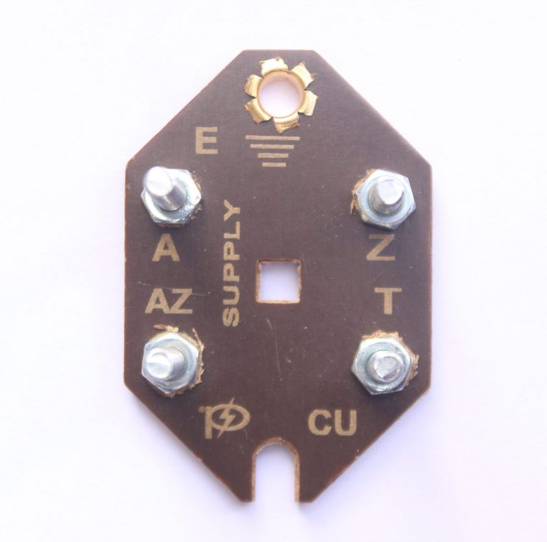
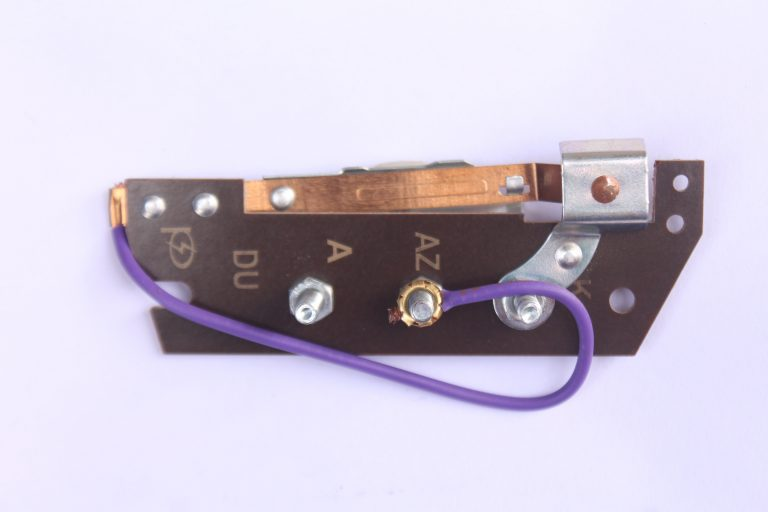
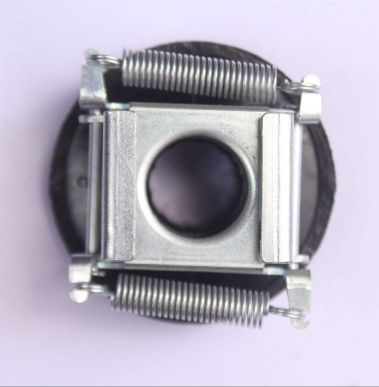

Value Stream Mapping
I conducted VSM and collected operator data to identify bottlenecks in the centrifugal switchgear process and understand where assembly time was being lost.
Industrial Engineering Internship | Maharashtra, India
Pragati Switchgears is an ISO 9001:2015 certified electromechanical manufacturing company specializing in centrifugal switches, O.C. switches, terminal bases, brass terminals, and transformer components. My internship focused on production flow, assembly reliability, fixture design, quality control, and shop-floor issue tracking.



Production-rate increase per hour
Terminal block line efficiency improvement
CAD tools used for fixture design
Work aligned with quality-focused manufacturing
What I Worked On
My role connected observation on the production floor with practical engineering action. I collected operator data, mapped the process, designed fixtures, supported a new assembly line, and helped make failures easier to track and resolve.
I conducted VSM and collected operator data to identify bottlenecks in the centrifugal switchgear process and understand where assembly time was being lost.
I designed custom fixtures to streamline assembly operations, reduce handling variation, and support a 21.6% production-rate increase per hour.
I supported a circuit-breaker production assembly line from scratch, including electromechanical integration, testing, line balancing, and DFM validation.
How I Improved Reliability
I used PFMEA to identify likely failure modes in terminal block assembly and connect them to practical fixture and process changes.
I implemented corrective fixture redesigns that improved assembly consistency and helped increase terminal block line efficiency by 15.66%.
I developed quality checklists so assembly checks, validation status, and recurring issues could be reviewed more consistently on the floor.
I maintained a Trello dashboard to track assembly failures, corrective actions, validation status, and root-cause resolution for faster production feedback.
Skills Built
This internship helped me connect CAD, line balancing, quality systems, and real operator feedback. The best improvements came from small fixture and tracking changes that made the work easier to repeat.
SolidWorks, Fusion 360, AutoCAD fixture design
Value Stream Mapping, bottleneck analysis, line balancing
PFMEA, checklists, validation, corrective actions
Trello dashboard for failures, root cause, and status